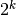
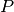

psc585.ps4¶
Problem Set 4 specific code
- class psc585.ps4.FinalModel(**kwargs)[source]¶
Attributes
delta float Discount factor of the government and provinces g1oversigma float Parameter k int Number of provinces m int Number of states that provinces can take,  n int Number of states, x ndarray, shape (k, ) Variable correlated with the wealth generated by each province y ndarray, shape (k, ) Variable correlated with the cost of war to each province wg float Government war cost D ndarray, shape (k, k) Matrix of distances between provinces S ndarray, shape (n, k) transition matrix data ndarray, shape (T, k + 2) Data, as in FinalData.mat. The first column records the state , enumerated according to the order of the coordinates. The last column contains the actions of the government. The  middle columns contain the actions
of the provinces.
middle columns contain the actions
of the provinces.Methods
- C_d(Pp, Pg)[source]¶
Compute matrix C_d
Parameters : Pg : ndarray, shape (n, 2 k)
Conditional choice probabilities for the government
Pp : ndarray, shape (n, k)
Conditional choice probabilities for provinces
Returns : C : ndarray, shape (n,)
Values of
Notes
The matrix C_d stacks entries from C_i^P by province and state in the data property.
- Ci(Pp, Pg, i)[source]¶
Compute matrix C_i^P
Parameters : Pg : ndarray, shape (n, 2 k)
Conditional choice probabilities for the government
Pp : ndarray, shape (n, k)
Conditional choice probabilities for provinces
i : int, 1 to k
Province
Returns : C : ndarray, shape (n,)
Values of
Notes
- Ei(Pp, i)[source]¶
Calculate E_i^P
Parameters : Pp : ndarray, shape (n, k)
Conditional choice probabilities for provinces
i : int, 1 to k
Province
Returns : Ei : ndarray, shape (n, )
Values of in part (b)
Notes
- Ei_ai(Pp, i, a)[source]¶
Calculate E_i^P(a_i)
Parameters : i : int, 1 to k
Province
a : int,
Action. 0 or 1.
Returns : Ei : ndarray, shape (n, )
Values of :math:`E_i^P(a_i, l, s) in part (b)
Notes
- W_d(Pp, Pg)[source]¶
Calculate matrix W_d
Parameters : Pg : ndarray, shape (n, 2 k)
Conditional choice probabilities for the government
Pp : ndarray, shape (n, k)
Conditional choice probabilities for provinces
Returns : W : ndarray, shape (n,)
Values of
Notes
The matrix W_d concatenates rows of W_i^P by province and state in the data property.
- Wi(Pp, Pg, i)[source]¶
Compute matrix W_i^P
Parameters : Pg : ndarray, shape (n, 2 k)
Conditional choice probabilities for the government
Pp : ndarray, shape (n, k)
Conditional choice probabilities for provinces
i : int, 1 to k
Province
Returns : W : ndarray, shape (n, 5)
Values of
Notes
- Zi(Pg, Pp, i)[source]¶
Calculate Z_i^P
Parameters : Pg : ndarray, shape (n, 2 k)
Conditional choice probabilities for the government
Pp : ndarray, shape (n, k)
Conditional choice probabilities for provinces
i : int, 1 to k
Province
Returns : Z : ndarray, shape (n, 5)
Values of from part (b).
Notes
- Zia(Pg, i, a)[source]¶
Calculate Z_i^P(a_i)
Parameters : Pg : ndarray, shape (n, 2 k)
Conditional choice probabilities for the government
i : int, 1 to k
Province
a : int
Action of player
 . 0 or 1.
. 0 or 1.Returns : Z : ndarray, shape (n, 5)
Values of in part (b)
Notes
if and 0 if .
- argmax_theta(Pp, Pg)[source]¶
Maximize partial pseudo-likelihood of theta
Parameters : Pp : ndarray, shape (n, k)
Conditional choice probabilities for provinces. Initial guess.
Pg : ndarray, shape (n, 2 k)
Conditional choice probabilities for the government. Initial guess.
Returns : theta : ndarray (5, 1)
Parameter estimates
Notes
Implements the partial pseudo-likelihood algorithm in part (e) of the assignment.
- classmethod from_mat(model, data)[source]¶
Instantiate class from .mat files
Parameters : model : string
Path to FinalModel.dat
data : string
Path to FinalData.mat
Returns : obj : FinalModel
Instance of the FinalModel class
- new_p(Pp, Pg, theta)[source]¶
Calculate transition probabilities
Parameters : Pp : ndarray, shape (n, k)
Conditional choice probabilities for provinces
Pg : ndarray, shape (n, 2 k)
Conditional choice probabilities for the government
theta : ndarray, shape (5, )
Parameters
Returns : Pp : ndarray, shape (n, k)
New conditional choice probabilities for provinces
Pg : ndarray, shape (n, 2 k)
New conditional choice probabilities for the government
Notes
Takes conditional choice probabilities  and :math:` heta` as an input and returns new conditional choice values. This is the mapping in part (c) of the assignment.
This is a wrapper for the matlab function NewP.
- npl(Pp, Pg, tol=1e-13, maxit=100, verbose=False)[source]¶
Nested-pseudo likelihood Estimator
Parameters : Pp : ndarray, shape (n, k)
Conditional choice probabilities for provinces. Initial guess.
Pg : ndarray, shape (n, 2 k)
Conditional choice probabilities for the government. Initial guess.
tol : float, optional
Convergence tolerance
maxit : int, optional
Maximum number of iterations
verbose : bool, optional
Print iterations
Returns : theta : ndarray, shape (5, 1)
Parameter estimates
converge : bool
Did the estimates converge?
t : int
Number of iterations
relres : float
Relative residual at the end of the iterations
Notes
Implements part (d) of the assignement.
- phigprov(Pp, Pg, theta)[source]¶
Calculate transition probabilities
Parameters : Pp : ndarray, shape (n, k)
Conditional choice probabilities for provinces
Pg : ndarray, shape (n, 2 k)
Conditional choice probabilities for the government
theta : ndarray, shape (5, )
Parameters
Returns : V : ndarray
Observable state values
Notes
Takes conditional choice probabilities and :math:` heta` as an input and returns values . This is the mapping in part (b) of the assignment.
This is a wrapper for the matlab function Phigprov.
- ptilde(Pp, Pg)[source]¶
Calculate transition probabilities
Parameters : Pp : ndarray, shape (n, k)
Conditional choice probabilities for provinces
Pg : ndarray, shape (n, 2 k)
Conditional choice probabilities for the government
Returns : P : ndarray
Transition probability matrix
Notes
Takes conditional choice probabilities as an input and returns the transition matrix :math:` ilde{P}`.
This is a wrapper for the matlab function Ptilde.
- ptilde_i(Pp, Pg, i, ai)[source]¶
Transition probabilities conditional on player i’s action
Parameters : Pp : ndarray, shape (n, k)
Conditional choice probabilities for provinces
Pg : ndarray, shape (n, 2 k)
Conditional choice probabilities for the government
i : int, 1 to k
Province
ai : int, bool
Province i’s action
Returns : P : ndarray
Transition probability matrix
Notes
This method calculates :math:` ilde{P}^P_i(a_i)`, the transition matrix with probabilities :math:` ilde{p}^P_i(l’, s’ | l, s, a_i)`.
This is calculated by taking the matrix Pp, and replacing the columns corresponding to player
‘s actions assuming that player
plays action . This new probability matrix is then used
as an input to psc585.PS4.FinalModel.ptilde().